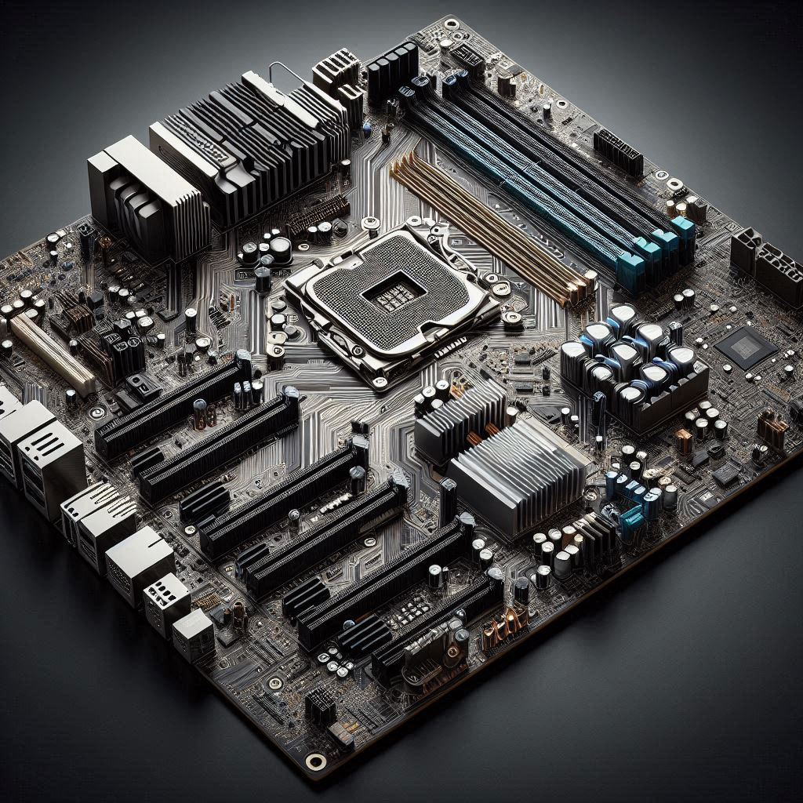
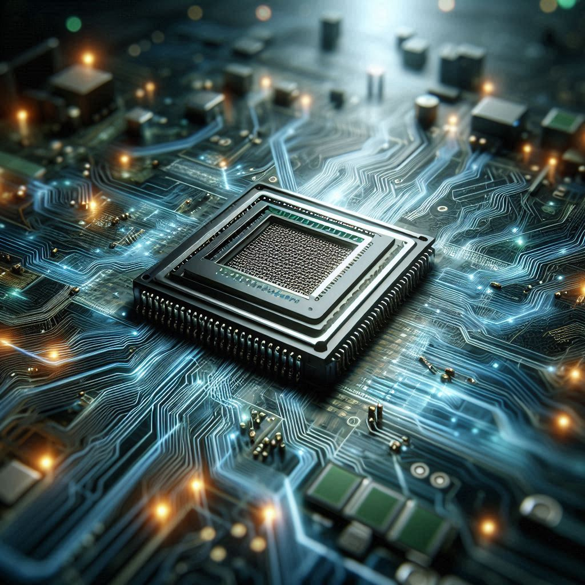
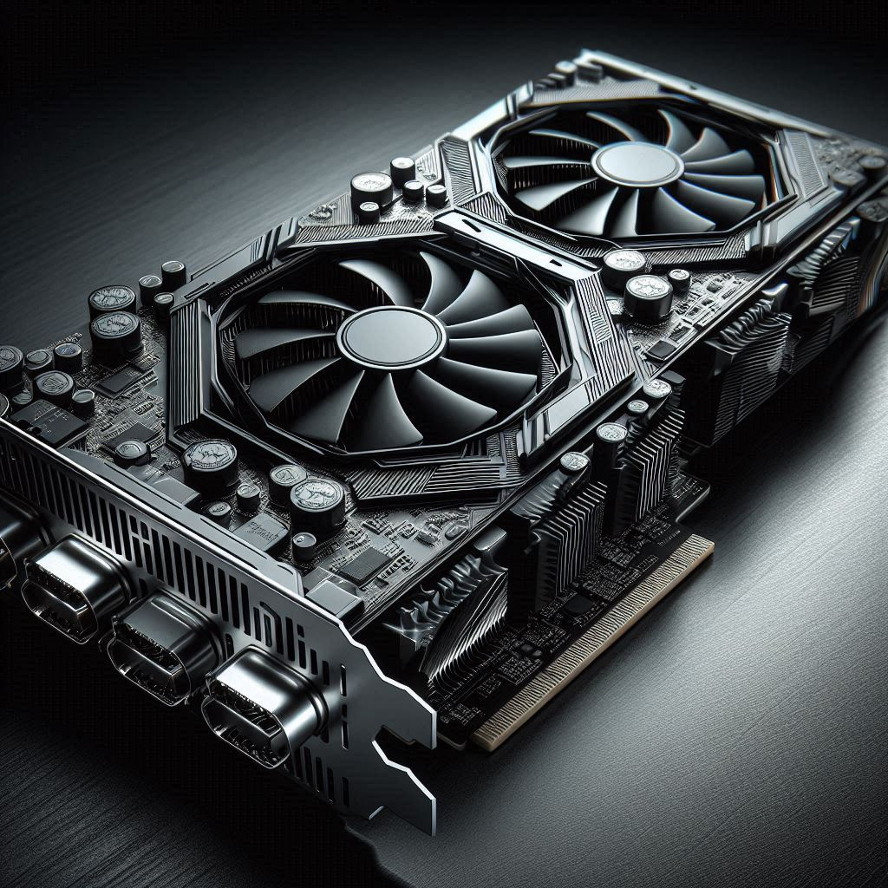

Aprendamos a instalar y reparar equipos de cómputo
Por: Carlos Sebastián
Introducción
¡Bienvenido a este espacio para aprender lo básico en instalación y reparación de equipos de cómputo! Aquí aprenderemos juntos, ya que también estoy en proceso de crecimiento y descubrimiento en este emocionante mundo. Aunque el diseño de esta página es sencillo y mis conocimientos como desarrollador web son modestos, cada esfuerzo está hecho con la intención de que esta información sea útil para ti.
Este curso no solo te permitirá adquirir habilidades prácticas, sino que también podrías convertirte en el héroe tecnológico de tu familia, el solucionador de problemas en tu comunidad, ¡o incluso emprender tu propio negocio en el futuro! Espero que este viaje de aprendizaje sea tan emocionante para ti como lo es para mí. ¡Saludos y manos a la obra!
Nota: Es necesario reforzar nuestros conocimientos investigando por separado cada uno de los componentes o procesos mencionados aquí. Esto puede lograrse viendo videos o buscando información relacionada, para así tener un conocimiento más sólido.
Se han agregado enlaces que reforzarán el aprendizaje. Por favor, no olvides dar un like para apoyar al autor de cada video por su excelente trabajo.
Herramientas para reparar equipos de cómputo
A continuación, una lista de algunas de las herramientas necesarias y su propósito de uso en general.
Herramientas para soldar y desoldar componentes
- Extractor de soldadura
- Dispositivo para retirar excesos de soldadura de placas electrónicas.
- Soldadura estaño-plomo
- Material conductor utilizado para unir componentes electrónicos.
- Malla desoldadora
- Tira metálica que ayuda a absorber soldadura en exceso.
- Líquido flux
- Químico que mejora la adherencia de la soldadura.
- Pistola de calor
- Herramienta para calentar y retirar componentes electrónicos.
- Estación de soldado con punta fina
- Equipo preciso para realizar soldaduras delicadas.
Herramientas para ensamblar y desensamblar equipos
- Pinzas de corte y alicatas
- Herramientas para cortar cables y otros elementos pequeños.
- Lupa
- Dispositivo para ampliar detalles durante reparaciones delicadas.
- Pinzas de punta
- Instrumento para manipular componentes pequeños.
- Desarmadores
- Herramientas básicas para aflojar o apretar tornillos.
- Puntas de precisión
- Accesorios diseñados para atornillar en espacios pequeños.
Herramientas para diagnóstico de fallos
- Cargador de entradas múltiples
- Dispositivo para probar diversas fuentes de alimentación.
- Multímetros
- Herramienta para medir valores eléctricos como voltaje, corriente y resistencia.
- Osciloscopio
- Equipo para visualizar señales eléctricas en tiempo real.
- Fuente de alimentación variable
- Proporciona electricidad ajustable para pruebas de componentes.
- Cables de comunicación
- Conectores para transferir datos o señales entre dispositivos.
Herramientas para limpieza de componentes
- Juego de pinceles
- Utensilios para retirar polvo y suciedad de las piezas.
- Alcohol isopropílico
- Solvente para limpiar placas electrónicas sin dañarlas.
Herramientas para proteger el equipo durante las reparaciones
- Guantes de algodón
- Protegen los componentes de huellas o aceites durante la manipulación.
- Pulsera antiestática
- Evita daños por descargas electrostáticas en componentes sensibles.
Tipos de Computadoras
| Tipo | Algunas características |
|---|---|
| Notebook |
|
| All-in-One (Todo en uno) |
|
| Gamer |
|
| Workstation (Computadora de Escritorio) |
|
| Servidor |
|
Dispositivos Internos de la Computadora
Los dispositivos internos son componentes fundamentales que permiten el funcionamiento adecuado de la computadora. Aquí tienes una lista de los principales dispositivos internos y sus funciones:
| Dispositivo | Función Principal |
|---|---|
| Tarjeta Madre  | Actúa como el centro de conexión donde se integran todos los componentes de la computadora. |
| Micropocesador (CPU)  | Ejecuta las instrucciones y realiza los cálculos para operar el sistema. |
| Tarjeta de Video  | Procesa gráficos y envía la señal de video a la pantalla. |
Tarjeta de Enfriamiento

|
Regula la temperatura de los componentes para evitar el sobrecalentamiento. |
Disco Duro (HDD)

|
Almacena datos de forma permanente y de gran capacidad. |
Unidad de Estado Sólido (SSD)

|
Almacena datos de forma rápida y eficiente, con menor tiempo de acceso que los discos duros. |
Recomiendo ver el siguiente video para reforzar lo aprendido: COMPONENTES INTERNOS de una PC: TIPOS y FUNCIONES GENERALES. Si te resulta útil, no olvides dejar un like para apoyar al creador del contenido.
Notas del Microprocesador
Puertos de Tarjeta Madre
Recomiendo ver el siguiente video para reforzar lo aprendido: ¡EXPLICADO! PLACA BASE - Motherboard Partes y funciones. Si te gusta el contenido, considera dejar un like como muestra de agradecimiento al autor.
| Tipo de Puerto | Uso |
|---|---|
| PCIe 10GbE | Conexión de tarjetas de red Ethernet de alta velocidad. |
| PCIe GPU | Instalación de tarjetas gráficas para procesamiento de gráficos. |
| PCIe SSD | Conexión de unidades de almacenamiento de alta velocidad. |
| SATA | Conexión de discos duros y unidades ópticas. |
| M.2 | Montaje de SSDs compactos y rápidos. |
| USB 3.0/3.1/3.2 | Conexión de periféricos como teclados, ratones y discos externos. |
| Thunderbolt | Transmisión rápida de datos y conexión de periféricos avanzados. |
| HDMI/DisplayPort | Salida de video hacia monitores y televisores. |
| Audio Jack | Conexión de dispositivos de sonido como auriculares y micrófonos. |
| Ethernet | Conexión a redes cableadas. |